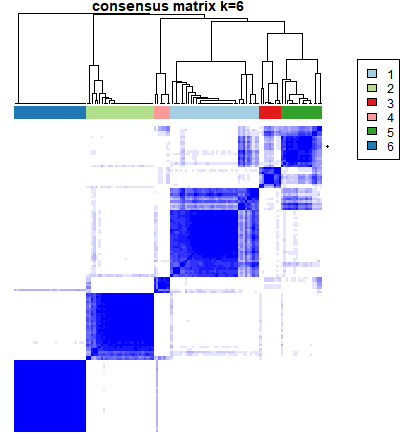
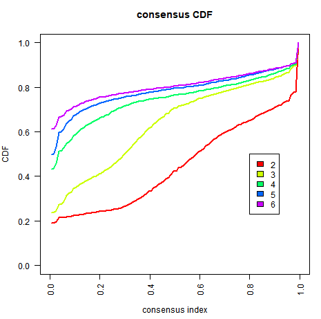
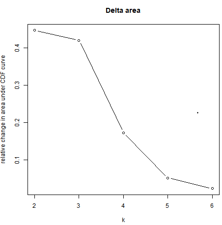
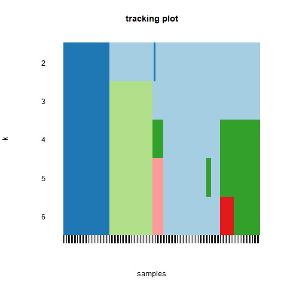

背景
Consensus Clustering(一致性聚类)，无监督聚类方法，是一种常见的癌症亚型分类研究方法（如乳腺癌中的PAM50），可根据不同组学数据集将样本区分成几个亚型，从而发现新的疾病亚型或者对不同亚型进行比较分析。
一致性聚类方法包括从一组项目中进行次抽样，例如微阵列，并确定特定簇计数（k）的簇。然后，对共识值，两个项目占在同一子样本中发生的次数中有相同的聚类，计算并存储在每个k的对称一致矩阵中。
为什么用一致性聚类
传统方法的不足
- 对于传统的聚类方法，不能提供“客观的”分类数目的标准和分类边界，如：Hierarchical Clustering。
- 它需要我们给出一个预定的分类数目，并且我们无法根据分类的结果去比较不同分类数目下结果的差异，如：K-means Clustering。
一致性聚类优势
- 一致聚类通过基于重采样(resample)的方法来验证聚类合理性
- 一致聚类方法的主要目的是评估聚类的稳定性
一致性聚类的基本原理假设
从原数据集不同的子类中提取出的样本构成一个新的数据集，并且从同一个子类中有不同的样本被提取出来，那么在新数据集上聚类分析之后的结果，无论是聚类的数目还是类内样本都应该和原数据集相差不大。因此所得到的聚类相对于抽样变异越稳定，我们越可以相信这一样的聚类代表了一个真实的子类结构。重采样的方法可以打乱原始数据集，这样对每一次重采样的样本进行聚类分析然后再综合评估多次聚类分析的结果给出一致性(Consensus)的评估。
代码实现
在R中，可以通过 ConsensusClusterPlus 包实现一致性聚类的操作，具体参考ConsensusClusterPlus (Tutorial)
首先导入数据并进行预处理：
##使用ALL示例数据
library(ALL)
data(ALL)
d=exprs(ALL)
d[1:5,1:5]
01005 01010 03002 04006 04007
1000_at 7.597323 7.479445 7.567593 7.384684 7.905312
1001_at 5.046194 4.932537 4.799294 4.922627 4.844565
1002_f_at 3.900466 4.208155 3.886169 4.206798 3.416923
1003_s_at 5.903856 6.169024 5.860459 6.116890 5.687997
1004_at 5.925260 5.912780 5.893209 6.170245 5.615210
## 筛选前5000高变异的基因
mads=apply(d,1,mad)
d=d[rev(order(mads))[1:5000],]
#sweep函数减去中位数进行标准化
d = sweep(d,1, apply(d,1,median,na.rm=T))
#一步完成一致性聚类
## 最大聚类个数为6，随即次数为50次，随机样本比例为80%
library(ConsensusClusterPlus)
title=tempdir()
results = ConsensusClusterPlus(d,maxK=6,reps=50,pItem=0.8,pFeature=1,
title=title,clusterAlg="hc",distance="pearson",seed=1262118388.71279,plot="png")
结果查询：
#输出K=2时的一致性矩阵
results[[2]][["consensusMatrix"]][1:5,1:5]
[,1] [,2] [,3] [,4] [,5]
[1,] 1.0000000 1.0000000 0.8947368 1.0000000 1.000000
[2,] 1.0000000 1.0000000 0.9142857 1.0000000 1.000000
[3,] 0.8947368 0.9142857 1.0000000 0.8857143 0.969697
[4,] 1.0000000 1.0000000 0.8857143 1.0000000 1.000000
[5,] 1.0000000 1.0000000 0.9696970 1.0000000 1.000000
#hclust选项
results[[2]][["consensusTree"]]
Call:
hclust(d = as.dist(1 - fm), method = finalLinkage)
Cluster method : average
Number of objects: 128
#样本分类
results[[2]][["consensusClass"]][1:5]
01005 01010 03002 04006 04007
1 1 1 1 1
#计算聚类一致性 (cluster-consensus) 和样品一致性 (item-consensus)
icl <- calcICL(results, title = title,
plot = "png")
## 返回了具有两个元素的list，然后分别查看一下
dim(icl[["clusterConsensus"]])
[1] 20 3
icl[["clusterConsensus"]]
dim(icl[["itemConsensus"]])
[1] 2560 4
icl[["itemConsensus"]][1:5,]
结果解读
一致性矩阵

以上图为例是聚类k=6的结果，这个图叫做CM plots，其目的是展示分类情况，找到最“干净”的一张图（也就是白的方块中尽量不掺杂蓝色），就是分类效果最好的一类。
一致性累积分布函数图

该图叫做经验累积分布函数曲线(Empirical cumulative distribution function),简称CDF。
Empirical cumulative distribution function (CDF) plots display consensus distributions for each k . The purpose of the CDF plot is to find the k at which the distribution reaches an approximate maximum, which indicates a maximum stability and after which divisions are equivalent to random picks rather than true cluster structure.
一般选取最佳k值的方法是考虑CDF下降坡度相对最小的曲线对应的k值
Delta Area Plot

根据此图，一般选取拐点处的k值作为最佳分类数。
The delta area score (y-axis) indicates the relative increase in cluster stability.
Tracking Plot

这个图从行（k）开始看，展示了不同聚类数(k)下，每个sample(列)都被分为了哪一类。比如，k=2时，样本分为浅蓝色和深蓝色的两类。